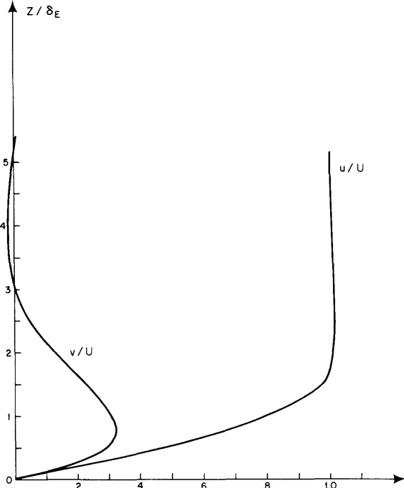

The Ekman layer is established as a balance between the vorticity diffusion from the boundary and the compensating tilting of the planetary vorticity filaments.
The requirement that $u$ should decrease from $U$ to zero as the boundary is approached requires $\eta \neq 0$, and this in turn requires $v \neq 0$, so that the diffusion of $\eta$ can be balanced by the tilting of vortex filaments in the $y$-direction by $\partial v / \partial z$
The figure shows the profiles of the velocity components $u$ and $v$. Far from the wall the velocity is entirely in the $x$-direction, which is the direction of the geostrophic flow. As the wall is approached, the retarding effect of friction decreases $u$. However, the pressure gradient in the $y$-direction is independent of $z$ and is therefore balanced only at infinity by the $y$-component of the Coriolis force. As $u$ decreases, this Coriolis force weakens, and in the presence of the pressure force in the $y$-direction, a velocity $v$ in that direction must be produced, flowing from high pressure to low pressure, retarded only by fluid friction